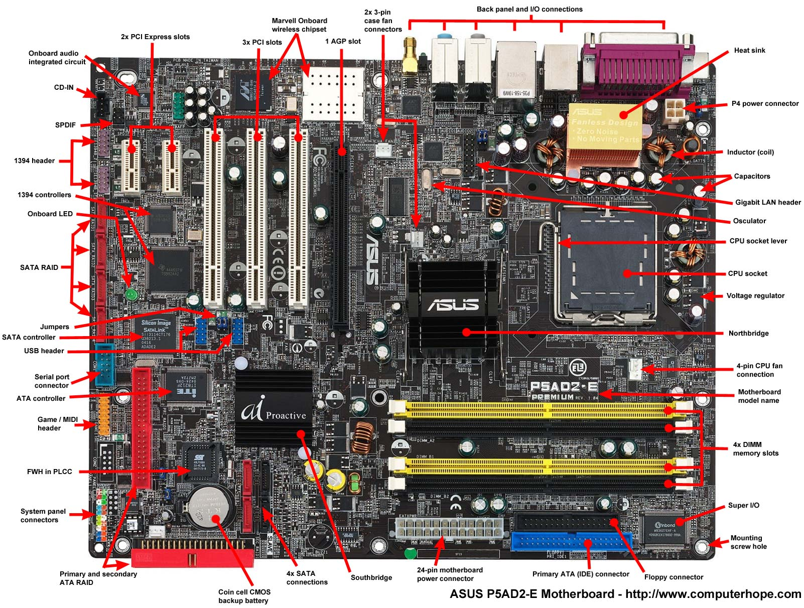
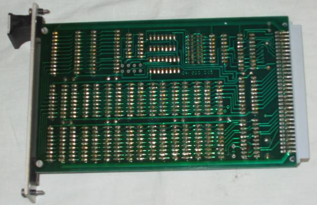
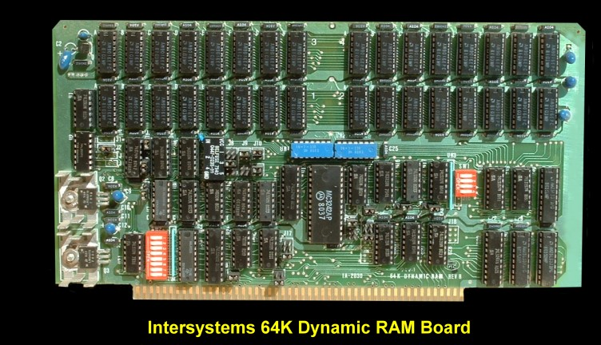
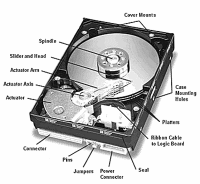

To link HTML to css you have to create a href and inside the href you have to put in the name of your css file.
<head>
<meta charset="UTF-8">
<title>How To make Hardware Page</title>
<link rel="stylesheet" href="navbar.css" type="text/css" />
</head>
To create a navbar, First you have to create an unordered list with an id. Next, make links for each of the pages. Finally write the name of each of the pages.
<ul id="navbar">
<li><a href="index.html">About Aakaash</a> </li>
<li><a href="hardware.html">Hardware</a> </li>
<li><a href="howtohardware.html">How to make hardware page</a> </li>
<li><a href="#">Calculator</a> </li>
<li><a href="#">Todo List</a> </li>
<li><a href="#">Vindinium</a> </li>
<li><a href="#">Big Project</a> </li>
</ul>
Step 1: link list to hardware page name. You do that by putting the name of your hardware page in the href.
<li><a href="hardware.html">Hardware</a> </li>
Step 2: Research history of motherboard and put it in your hardware page.
The Motherboard is the main Circuit Board found in microcomputers and other systems. It allows communication between many of the electronic components of a system. A motherboard usually contains significant sub-systems such as the central processor, input/output
and memory controllers, interface connectors and other components integrated for general use. The motherboard is often referred to as the mother of all components as the name suggests. The CPU, memory and peripherals were housed on individual
circuit boards which were plugged into the backplate.Laptop and notebook computers that were developed in the 1990s integrated the most common peripherals. This included motherboards with no upgradeable components, a trend that would continue
as smaller systems that were introduced after the turn of the century. Modern motherboards include Sockets, a chipset, Non voltaile memory chips, A clock generator, Slots for expansion cards and Power Connectors. The sockets are where mictoprocessors
are installed. The CPU is directly soldered to the motherboard. A chipset forms an interface between the CPU's front side bus, main memory and peripheral base. The Non Voltaire Memory Chips contain the systems firmware or BIOS. A clock generator
produces the system clock signal to synchronize the various components. The Slots for expansion cards are the interface to the system via the buses supported by the chipset.
Step 3: get picture of motherboard and put inside the hardware page.

<img src="images/mobo.jpg" style="width:1272px";/>
Step 4: research Types of RAM and put that research inside the hardware page.
Two Widely used forms of modern RAMS are Static RAM(SRAM) and Dynamic RAM(DRAM).
In SRAM, a bit of data is stored using the state of a six transistor memory cell.
A bit is the smallest unit of data in a computer. A bit has a single binary value, either 0 or 1.
A six transistor memory cell is a type of semiconductor memory that use bistable latching circuitry to store each bit.
This form is more expensive, but is faster and requires less dynamic power than DRAM.
DRAM stores a bit of data using a transistor and capacitor pair, which together comprise a DRAM memory cell.
A capacitor is an electronic component used for storing charge and energy.
The usual capacitor is a pair of parallel plates seperated by a small distance.
Step 5: Get pictures of both types of RAM

<img src="images/SRAM.jpg" style="width:500px;"/>
<img src="images/DRAM.jpg" style="width:500px;"/>
Step 6: Get information about parts of the Hard Drive.
The hard drive is an incredibly efficient computer memory device that uses simple magnetism to store vast amounts of informations. In your laptop there's just a large shiny circular plate of magnetic material called a platter. In a hard drive you can
find a read-write head, an Actuator that moves the read-write arm, a Central Spindle, a Magnetic Platter, Plug connections that link the hard drive to circuit board in personal computer, and a small spindle that allow read-write arm to swing across
platter. A read-write head is a specific physical part of a hard disk that is responsible for reading data from, and writing dato to, the disk. They are usually made up of a thin horizontal magnetic blade attached to an actuator arm.
A spindle is a shaft that holds a rotating hard disk drive platters in place. A platter is the circular disk on which magnetic data is stored in a hard disk drive.
Step 7: get picture of a Hard Drive

<img src="images/HardDrive.png" style="width: 1200px;"/>